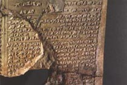

|
|
EARLY STORY - REG VALLINTINE
Man has entered the sea from the very earliest times.
When we find the remains of ancient settlements we find middens or piles of shells and among those we find oyster shells. These could only have been reached by people actually holding their breath and swimming down underwater. The earliest written records are in the Epic of Gilgamesh which dates from 3,000BC.
GILGAMESH - BRUCE BEDFORD

And they said to Gilgamesh, “You came here a man wearied out and you have worn yourself out. What shall I give you to carry back to your own country?Gilgamesh, I shall reveal a secret thing: it is a mystery of the Gods that I am telling you. There is a plant that grows under the water. It has a prickle like a thorn, like a rose. It will wound your hands, but if you succeed in taking it, then your hands will hold that which restores his lost youth to a man.”
He tied heavy stones to his feet and they dragged him down to the water bed. There he saw the plant growing. Although it pricked him he took it in his hands. Then he cut the heavy stones from his feet and the sea carried him and threw him on the shore.
ROYAL LIBRARIES at NINEVEH c.650 BC
EARLY STORY - REG VALLINTINE
Assyrians supervise as the army crosses a river, probably the Euphrates. Some soldiers cross on inflated skins, but are these swimmers using aids to floatation or early divers taking air from shallow underwater breathing devices?
NORTHWEST PALACE, NIMRUD c.865 BC
In a second frieze enemy soldiers struggle across a river towards a fortress - are they swimming or diving? The absence of weights gives rise to the doubt.
ASHURNASIRPAL’S CAMPAIGN 878 BC
|
|